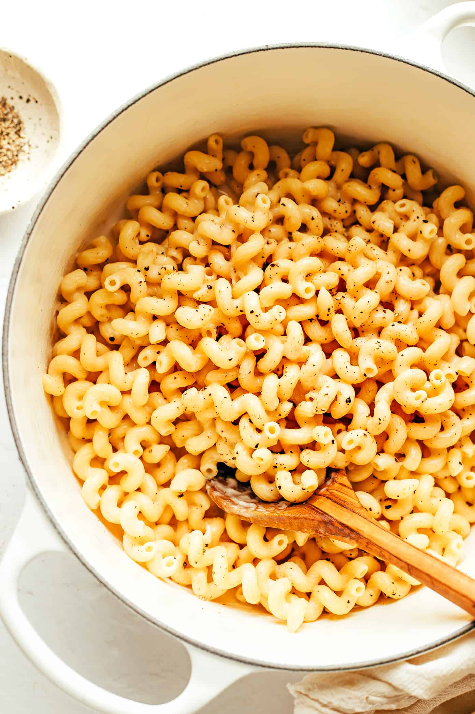
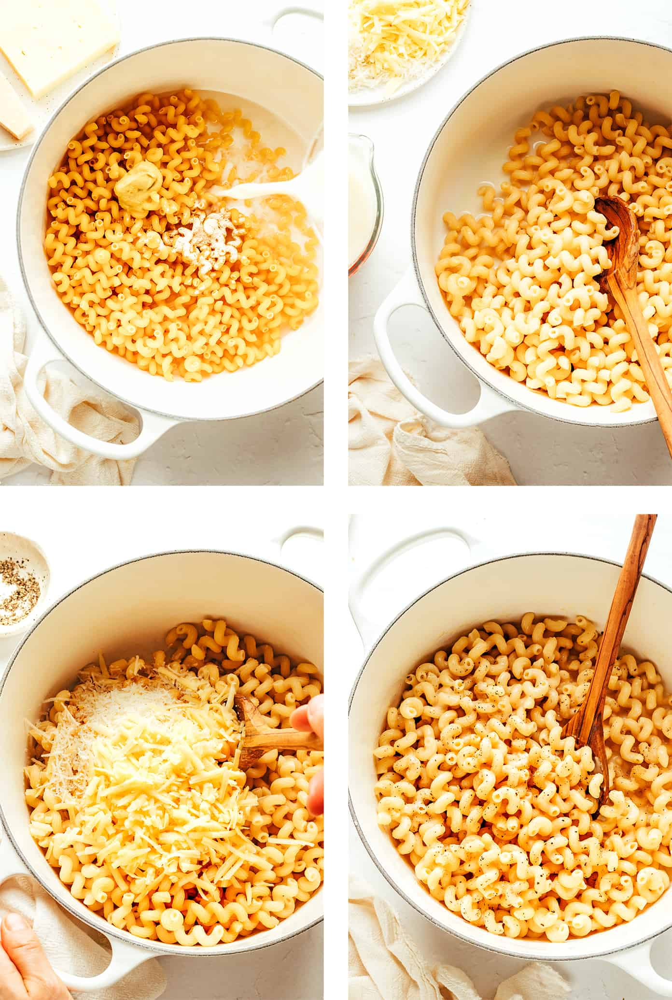
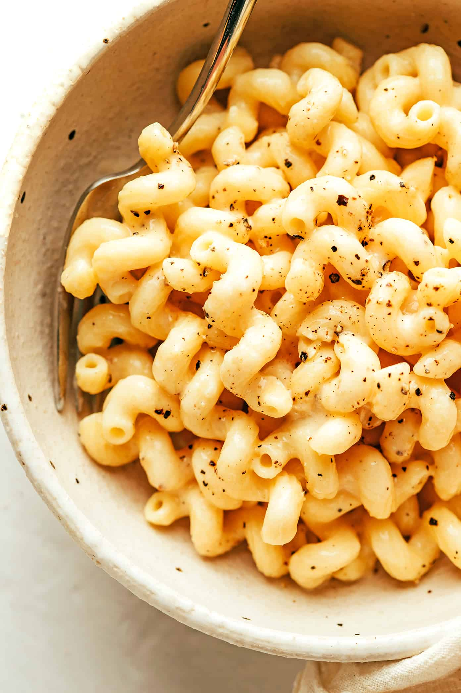
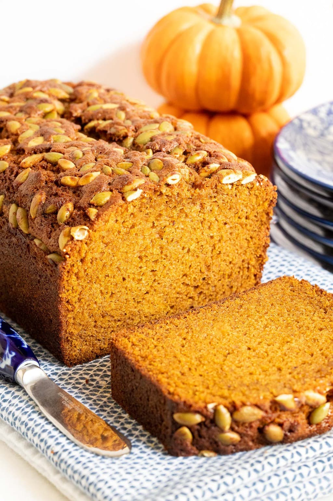
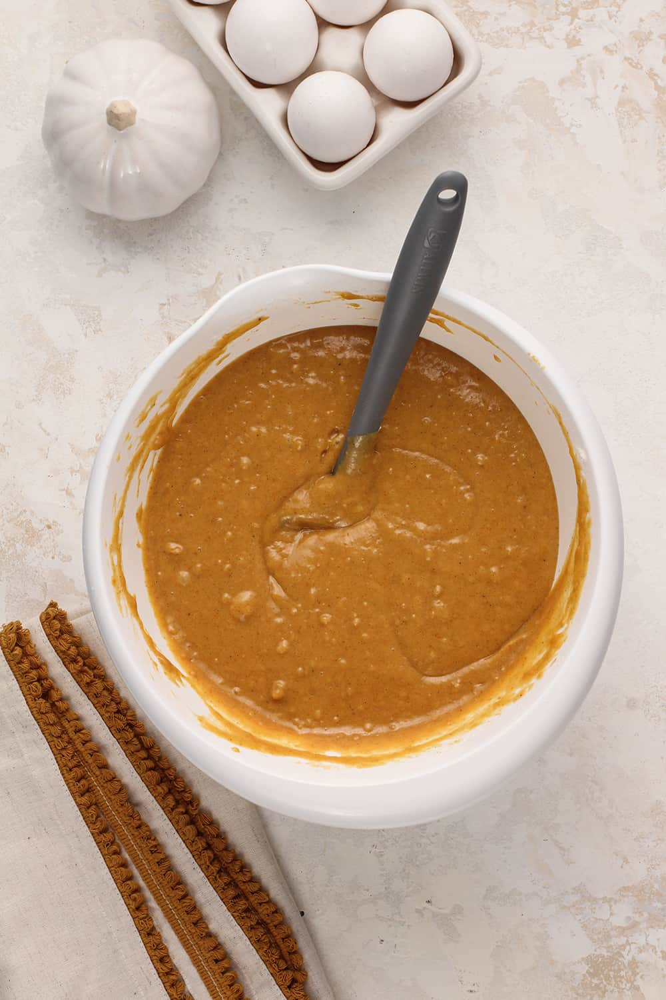
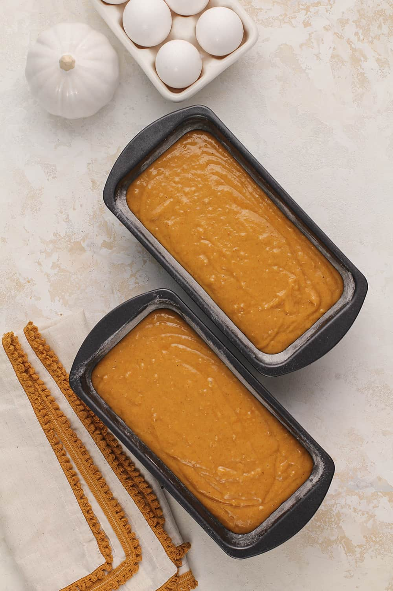
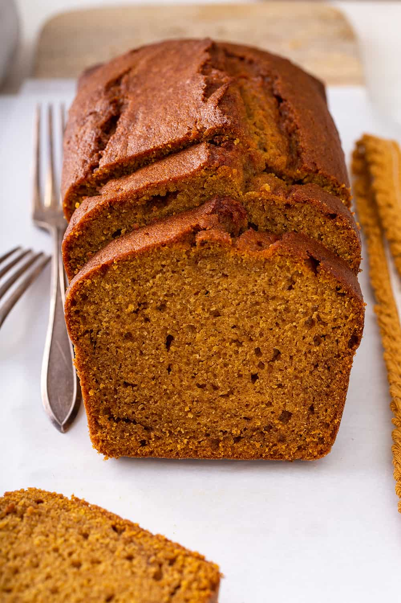
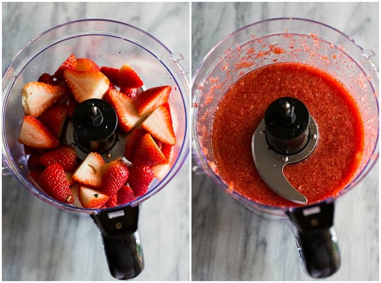
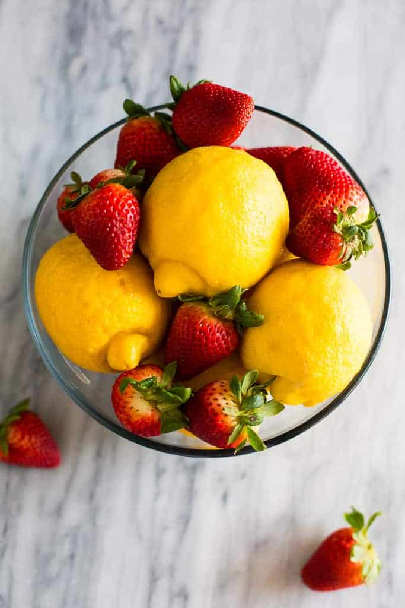
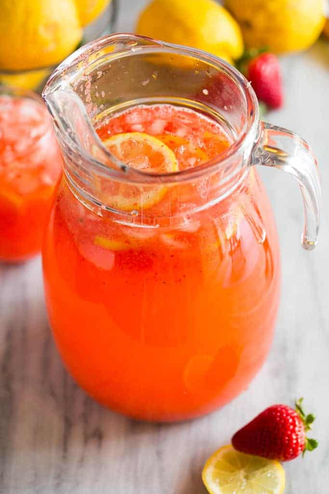

Recipes
Stovetop Macaroni and Cheese
This is my favorite recipe for a quick and easy stovetop mac & cheese. I have made it many times and it always turns out great!
Recipe Ingredients:
- 1 pound uncooked pasta
- 3 cups water
- 2 cups milk
- 1 teaspoon Dijon mustard
- 1 teaspoon fine sea salt
- 1 teaspoon garlic powder
- 2 to 4 cups freshly-grated sharp cheddar cheese
- 1 cup finely-grated Parmesan cheese
- freshly-ground black pepper, to taste
Recipe Instructions:
- Cook the pasta. Combine the pasta, water, milk, Dijon, sea salt and garlic powder in a large stockpot. Heat over medium-high heat, stirring the pasta once every few minutes, until the water reaches a boil. Adjust heat as needed to maintain a rolling boil. Continue cooking the pasta, stirring once or twice per minute, until the pasta is *just* barely al dente. (Cooking time will depend on the shape of pasta that you use, so please keep a close eye on it.) Remove pot from heat.
- Remove excess water (if needed). Check to see how much starchy pasta water remains in the pot. If it seems that there is more than 1/2 cup or so, dip a heatproof measuring cup in to remove and save the excess water, then set it to the side. (If by chance there is no starchy pasta water left, please add 1/2 cup hot water to the pot.)
- Add cheese. Add the cheese to the pasta and gently stir until completely melted. If the pasta seems too dry, stir some of the reserved starchy pasta water back in as needed.
- Season. Taste and season with extra salt and pepper, if needed.
- Serve. Serve warm, garnished with extra black pepper if desired.
Additional Food Images


Pumpkin Bread
Pumpkin bread is a family favorite fall treat!
Recipe Ingredients:
- 2 cups all-purpose flour, spooned into measuring cup and leveled-off
- ½ teaspoon salt
- 1 teaspoon baking soda
- ½ teaspoon baking powder
- 1 teaspoon ground cloves
- 1 teaspoon ground cinnamon
- 1 teaspoon ground nutmeg
- 1½ sticks (¾ cup) unsalted butter, softened
- 2 cups sugar
- 2 large eggs
- 1 15-oz can 100% pure pumpkin
Recipe Instructions:
- Preheat the oven to 325°F and set an oven rack in the middle position. Generously grease two 8 x 4-inch loaf pans with butter and dust with flour (alternatively, use a baking spray with flour in it, such as Pam with Flour or Baker's Joy).
- In a medium bowl, combine the flour, salt, baking soda, baking powder, cloves, cinnamon, and nutmeg. Whisk until well combined; set aside.
- In a large bowl of an electric mixer, beat the butter and sugar on medium speed until just blended. Add the eggs one at a time, beating well after each addition. Continue beating until very light and fluffy, a few minutes. Beat in the pumpkin. The mixture might look grainy and curdled at this point -- that's okay.
- Add the flour mixture and mix on low speed until combined.
- Turn the batter into the prepared pans, dividing evenly, and bake for 65 – 75 minutes, or until a cake tester inserted into the center comes out clean. Let the loaves cool in the pans for about 10 minutes, then turn out onto a wire rack to cool completely.
Additional Food Images



Strawberry Lemonade

Lemonade is my favorite drink of all time!! This strawberry lemonade is a delicious and refreshing summer treat
Recipe Ingredients:
- 1/2 pound fresh strawberries , stems removed
- 1 1/2 cups granulated sugar
- 4 1/2-5 cups water , divided
- 1 1/2 cups fresh-squeezed lemon juice
Recipe Instructions:
- Use a blender or food processor to puree the strawberries. Strain them through a fine mesh sieve, if desired, to remove seeds.
- In a small saucepan, over medium heat, stir together sugar and 2 cups water.
- Bring to a boil, and stir until sugar is dissolved. Remove from heat and allow to cool to room temperature.
- Strain the lemon juice through a fine-mesh sieve into a 2-quart pitcher. Add simple syrup and pureed strawberries and stir to combine. Refrigerate until cold.
- When ready to serve, add 2 ½ cups of cold water and stir. Taste, and add more water if it's too sweet.
- Serve over ice.
Additional Food Images


